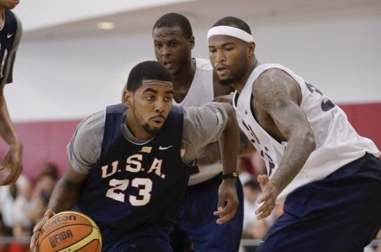

欧文当选年度美男篮最佳运动员 比肩众多名宿 |
|
|
 新浪体育讯 北京时间12月22日，据《克利夫兰老实人报》报道，凭借着在今夏男篮世锦赛中的优异表现，骑士队主力控卫凯里-欧文成功当选为2014美国篮球年度最佳男运动员。
这个称号是由美国篮球董事会所评选出来的。
今年的西班牙男篮世锦赛上，欧文代表美国队打满了全部9场比赛，而且都是以首发身份出场。他在场均24.4分钟内得到12.1分、2.6个篮板、3.6次助攻和1.9次抢断，不仅帮助美国队夺得金牌，他自己也被评为MVP。
对于能够当选为2014美国篮球年度最佳男运动员，欧文显得十分谦逊。
“能够加入到这些伟大的获奖者们的行列，这真的是一钟荣誉和幸运。”欧文在一份声明中说道，“到目前为止，加入美国男篮是我人生中最棒的一段经历。成为美国男篮的一员比我自己都要重要。”
值得一提的是，此前获得过这项荣誉称号的NBA球员包括了：迈克尔-乔丹、沙奎尔-奥尼尔、蒂姆-邓肯、杰森-基德、勒布朗-詹姆斯和凯文-杜兰特。
今夏代表美国队出征世锦赛的经历显然给欧文带来了很大的帮助，而且他表示自己会永远珍惜这段经历。
“为了让球队取得成功并且战胜困境，我们都必须做出牺牲。最终，我们带着一枚金牌回家。”欧文继续说道，“整个过程中，我们都很团结，并一起赢得金牌，所以我这辈子都将会记住这一时刻。” |
|
 |
 |
 |
 |
 |
 |